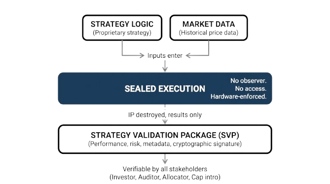

Strategy verification for systematic hedge funds and their investors.

Lintel Standard is building the verification infrastructure for algorithmic investment strategies. We address a structural problem in the systematic fund industry: when a manager claims their strategy produced specific results, there is no mechanism for an investor to independently verify that claim without requiring disclosure of proprietary logic.
Our platform uses Trusted Execution Environments to execute strategy logic inside a hardware-attested enclave that neither party — and neither we — can observe or modify. The output is a Strategy Validation Package (SVP): a cryptographically bound tuple of logic, data, and environment that constitutes mechanical proof of computational results. Verification is possible without source code disclosure.
We are building the open standard and the commercial platform to make this the default language of trust in systematic finance.
Research
Our published research defines the protocol architecture and the specification language that underpin the platform.
Contact
For inquiries, please contact us at kalle@lintelstandard.com.